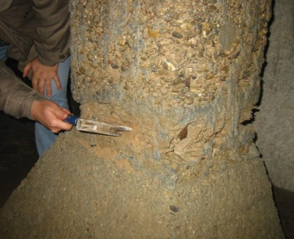
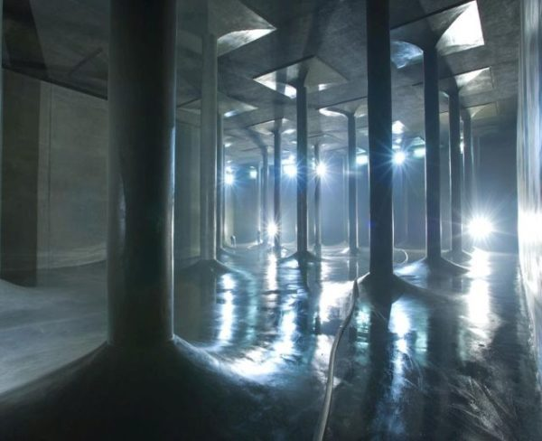
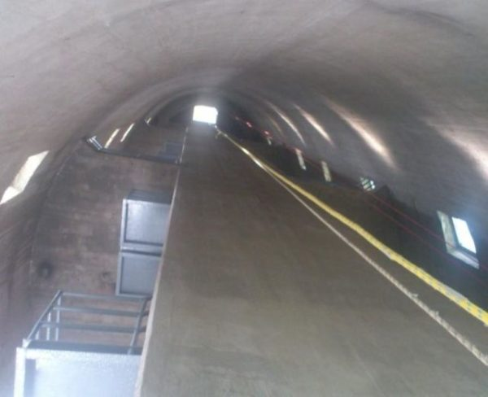
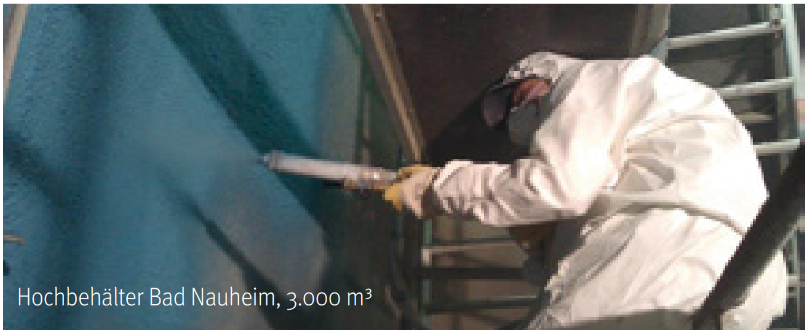
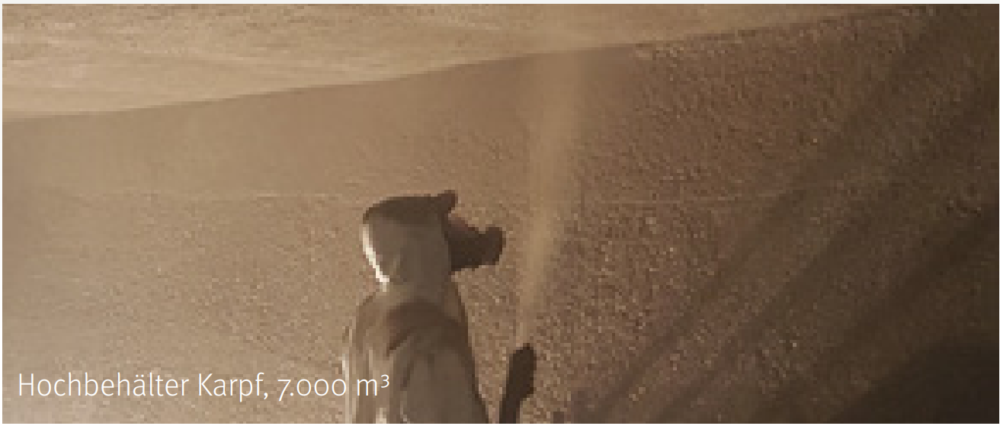
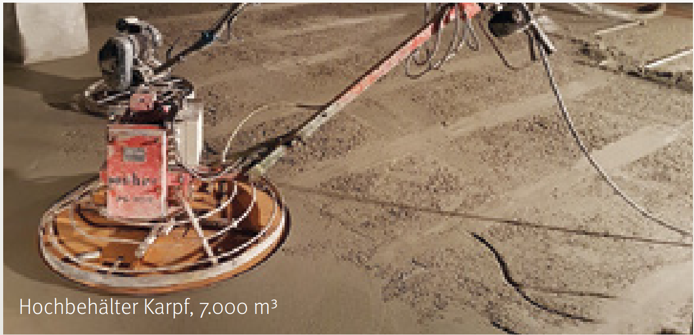

MICROTOP TW – 8 DVGW-zugelassene Produkte für die Sanierung von Trinkwasserbehältern. Ein aufeinander abgestimmtes System – von der Vorspritzung bis zur Oberflächenvergütung.
Abblätternde Beschichtungen, Keimbelastung, steigende Sanierungskosten – Trinkwasserbehälter altern. Die Frage ist nicht ob, sondern wann saniert werden muss.
Es gibt ein System, das alle Arbeitsschritte abdeckt.
Abblätternde Beschichtungen, korrodierter Beton, sichtbare Bewehrung. Ihr Trinkwasserbehälter hat die besten Jahre hinter sich – und jede Verzögerung verschlimmert den Zustand.
Beanstandungen bei der Trinkwasserprüfung. Keimbelastung an rauen Oberflächen. Die Hygieneanforderungen nach DVGW W 300 werden nicht mehr erfüllt.
Notfallsanierungen, lange Ausfallzeiten, provisorische Lösungen. Jede Woche ohne funktionstüchtigen Behälter kostet – und die Verantwortung liegt bei Ihnen.
8 aufeinander abgestimmte Produkte. Alle DVGW-zugelassen nach W 300 und W 347. Für jeden Arbeitsschritt das richtige Produkt: vom Vorspritzen über den Hauptauftrag bis zur Oberflächenvergütung.
Rein mineralisch. Keine Kunststoffe im Trinkwasser. Microsilica-vergütet für höchste Dichtigkeit.
Alle 8 Produkte nach DVGW W 300 und W 347 zugelassen. Geprüft vom Hygiene-Institut des Ruhrgebiets.
Kein Kunststoff, kein Epoxidharz, keine bioverfügbaren Inhaltsstoffe. Mineralisch ohne Alterungsprozess.
Microsilica-vergütet für maximale Dichtigkeit. Wasserundurchlässig, chloridfrei, korrosionshemmend.
Glatte, abreibfähige Oberfläche. Geringes Porenvolumen – minimale Angriffsfläche für Keime.
Ein Arbeitsgang statt mehrerer Schichten. Maschinell spritzbar mit geringem Rückprall.
Kürzere Ausfallzeiten. Geringere Sanierungskosten. Schneller zurück zur sicheren Trinkwasserversorgung.
Wasserversorger, Ingenieurbüros und Fachfirmen in ganz Deutschland und international vertrauen auf MICROTOP TW.

Größter Trinkwasserbehälter Nordbayerns. Komplettsanierung mit 6 MICROTOP TW Produkten – von der Reprofilierung bis zur Oberflächenvergütung. Fertigstellung in nur einem Jahr.
Referenzprojekt ansehen →
Zwei Kammern mit je 72 Stützen. 33.500 m² saniert mit MICROTOP TW 02, TW 3, TW 5 und TW BM. Investition: 5,7 Mio. EUR.
Referenzprojekt ansehen →
Internationales Projekt in Ungarn. Nach 30 Jahren Betrieb wählten die Stadtwerke Budapest MICROTOP TW BM und TW 02 für die Komplettsanierung.
Referenzprojekt ansehen →| Ort | Jahr | Ausführungsfirma |
|---|---|---|
| Dieburg | 2009 | AquaConcept |
| Nürnberg | 2009 | Rödl |
| Bad Reichenhall | 2024 | Gottlob Rommel |
| Arnsberg | 2024 | AquaConcept |
| Petersaurach | 2024 | Bauschutz |
| Heimsheim | 2025 | Otto Quast |
| Schopfheim | 2025 | Orth & Schöpflin |
| Belm | 2025 | Otto Quast |
Ihr Projekt besprechen? Rufen Sie uns an.
KORODUR: +49 9621 4759-0Ob Nassspritzen, Trockenspritzen oder manuelle Verarbeitung – für jede Anforderung das passende Verfahren.

Dichtstromförderung mit geringer Staubentwicklung und gleichbleibendem Wasserzementwert. Schichtdicke ca. 20 mm in einem Arbeitsgang.

Größere Förderweiten und höhere Verdichtung. Geringer Rückprall dank optimierter Sieblinie. Drei Körnungen für 9–25+ mm.

Für Rohre, Kanäle und Feinarbeiten. Verarbeitung per Schleuder, Spachtel, Pinsel oder Sprühen.
8 Produkte, ein System. Finden Sie das passende MICROTOP TW Produkt für Ihre Anforderung.
| Ihr Bedarf | Produkt | Schichtdicke | Verfahren |
|---|---|---|---|
| Hauptbeschichtung (dünn, fein) | TW 3 | 9–20 mm | Trockenspritzen |
| Hauptbeschichtung (mittel) | TW 5 | 14–30 mm | Trockenspritzen |
| Reprofilierung (stark, dick) | TW 8 | ab 25 mm | Trockenspritzen |
| Hauptbeschichtung, staubarm | TW NSM | ca. 20 mm | Nassspritzen |
| Rohre + Behälter auskleiden | TW BM | 5–8 mm | Schleudern / Hand |
| Vorspritzen (Haftgrund) | TW VSM | 15–20 mm | Spritzen / Hand |
| Korrosionsschutz / Haftbrücke | TW 02 | 2–5 mm | Spritzen / Spachteln |
| Oberflächenvergütung | TW Mineral | 150–250 g/m² | Pinsel / Sprühen |
Nicht sicher, welches Produkt? Wir helfen weiter.
KORODUR: +49 9621 4759-0Bei der Sanierung von Trinkwasserbehältern stehen drei Beschichtungssysteme zur Wahl.
| Kriterium | MICROTOP TW | Epoxidharz | Edelstahl |
|---|---|---|---|
| DVGW | Alle 8 zugelassen (W 300 + W 347) | Produktabhängig | Grundsätzlich geeignet |
| Material | Rein mineralisch | Kunststoffbasiert (VOC) | Edelstahl |
| Lebensdauer | 30+ Jahre | 15–20 Jahre | 40+ Jahre |
| Verarbeitung | Einlagig, maschinell | Mehrschichtig | Maßanfertigung |
| Sanierungsdauer | Kurz | Mittel | Lang |
| Kosten | Mittel | Niedrig–Mittel | Sehr hoch |
| Flexibilität | 8 Produkte | 1–2 Produkte | Starre Platten |
| Nachhaltigkeit | Kein Kunststoff | Kunststoffbasiert | Hoher CO₂-Fußabdruck |
Alle MICROTOP TW Produkte erfüllen die strengen Anforderungen der DVGW-Arbeitsblätter W 300 und W 347.
| TW 3, TW 5, TW 8, TW NSM, TW BM, TW 02 | Typ Klasse 1 · W 300 · W 347 |
| TW VSM | Typ Klasse 1 · W 347 |
| TW Mineral | DVGW-geeignet für Trinkwasseranlagen |
Geprüft vom Hygiene-Institut des Ruhrgebiets. Keine bioverfügbaren Inhaltsstoffe. Entspricht DIN EN 13892-2, DIN 18551, DIN EN 13670 / DIN 1045-3. Zertifiziert nach DIN EN ISO 9001:2015.
Ob allgemeine Produktinformationen oder konkrete Projektplanung – wir sind für Sie da. Kostenlos und unverbindlich.